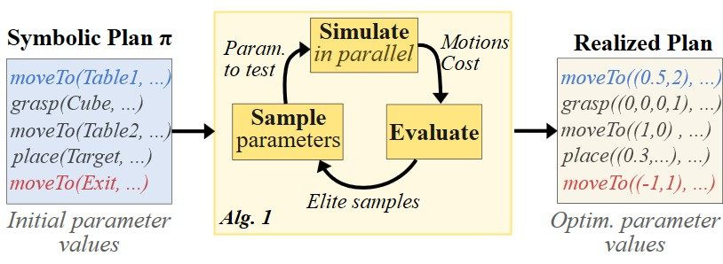
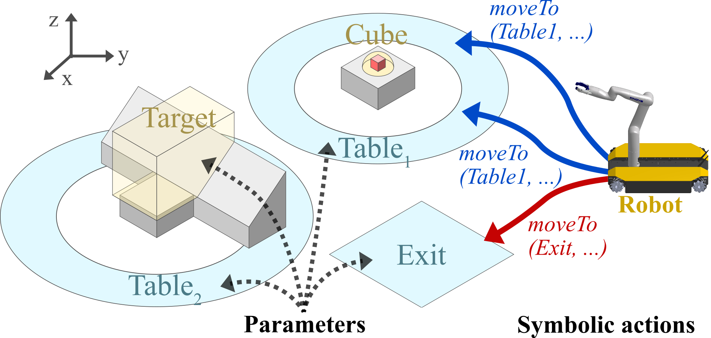
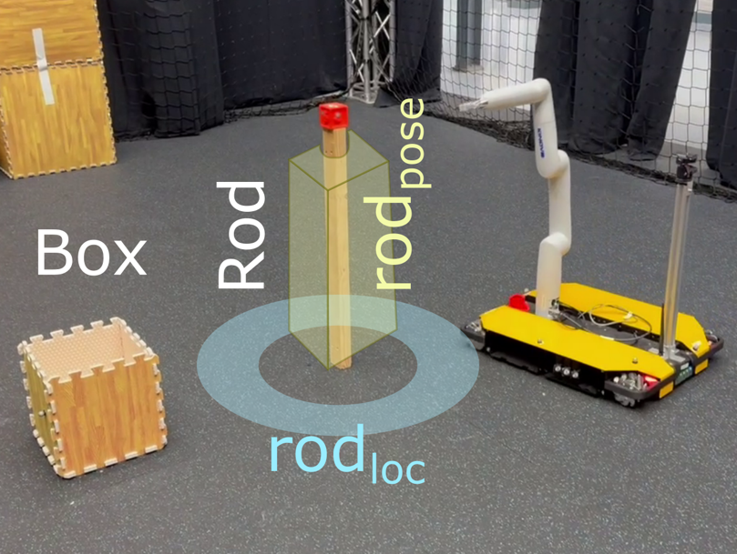

Autonomously performing tasks often requires robots to plan high-level discrete actions and continuous low-level motions to realize them. Task and Motion Planning (TAMP) algorithms solve these hybrid problems together. Previous TAMP algorithms have focused mainly on computational performance, completeness, or optimality by making the problem tractable through simplifications and abstractions. However, this comes at the cost that the resulting plans may not adequately account for the dynamics or complex contacts necessary to reliably perform the task when manipulation of objects is required. Additionally, approaches that ignore effects of the low-level controllers may not obtain optimal or feasible plan realizations for the real system. We investigate the use of a GPU-parallelized physics simulator to compute realizations of plans with a motion controller, explicitly accounting for dynamics, and considering contacts with the environment. Using cross-entropy optimization, we sample the parameters of the controllers, or actions, to obtain low-cost solutions. Since our approach uses the same controllers as the real system, the robot can directly execute the computed plans. We demonstrate our approach for a set of tasks where the robot is able to exploit the environment's geometry to move an object.

* We use geometric fabrics for fast, GPU-parallelizable motion of the base and arm with end-effector pose control and collision avoidance. For mobile base path planning only, we use A* with a parallelized GPU waypoint tracking algorithm. The simulation is implemented in NVIDIA Isaac Gym.
Two tables are separated by an obstacle. A graspable cube starts on Table 1. The obstacle geometry may help or hinder the task.
Place the cube on Table 2 and move the robot to the Exit region while minimizing time.

The robot routes around the obstacle. Alternative paths exist, but take longer.
The ramp lets the cube slide to Table 2, shortening the robot path to the exit.
A vertical stick with a red cube on top stands near an open box.
Push the stick so the cube falls inside the box while minimizing time.
We denote the stick location as $\mathbf{rod_{loc}}$ and the push target as $\mathbf{rod_{p}}$.

The robot routes around the box and pushes the stick with minimal extra motion.
The robot approaches from the correct angle and pushes directly.